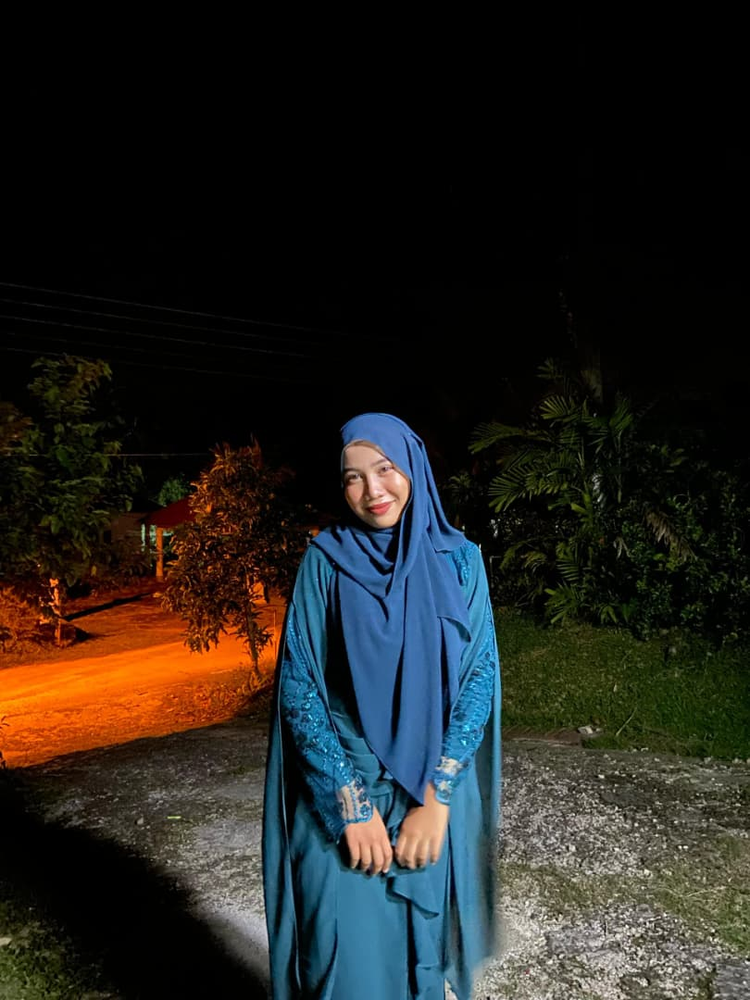
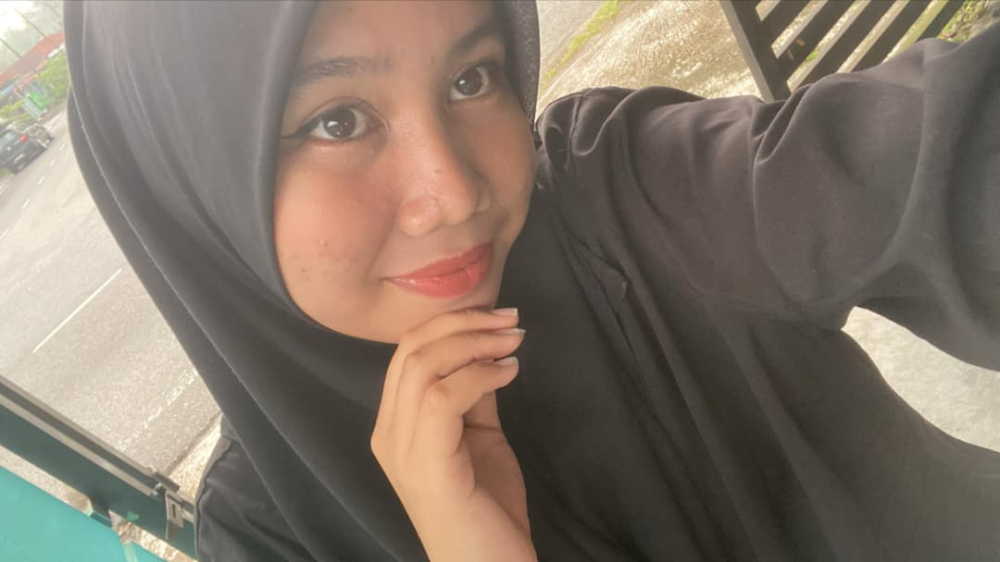
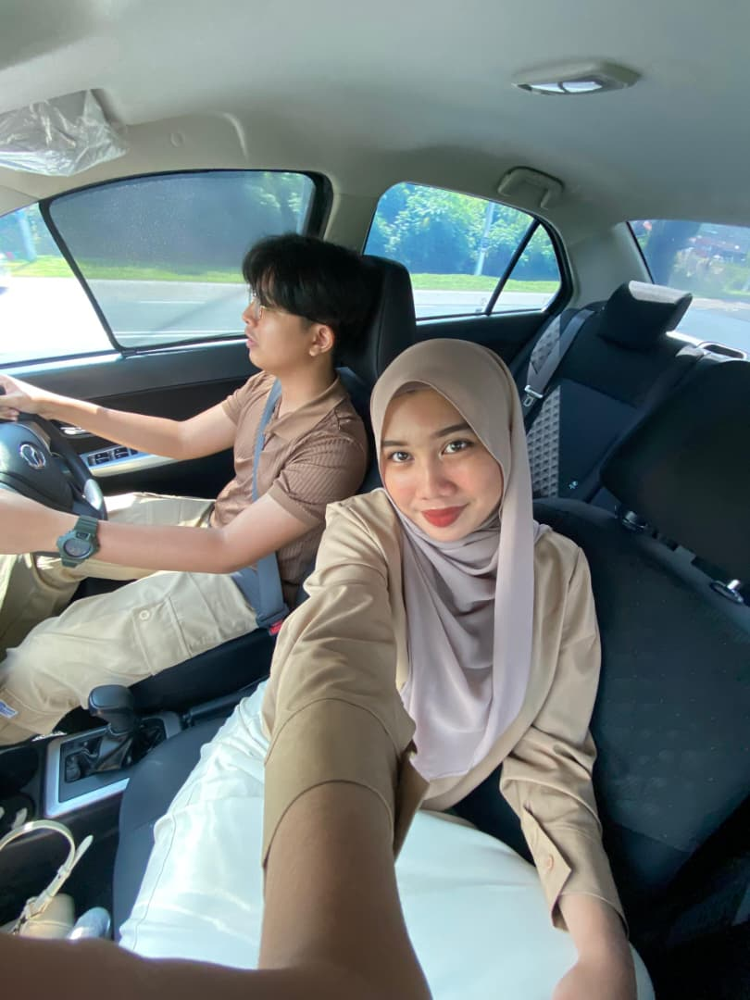
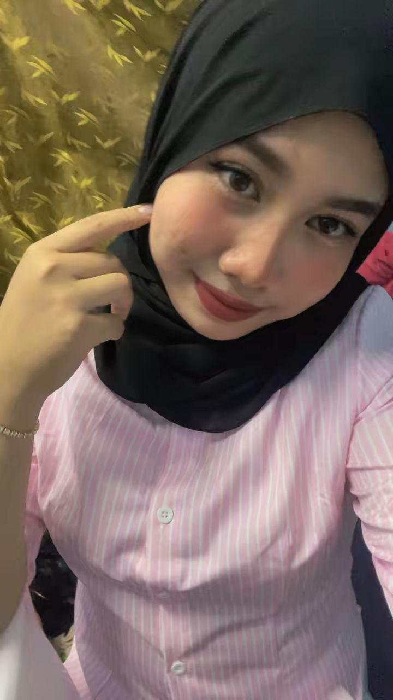
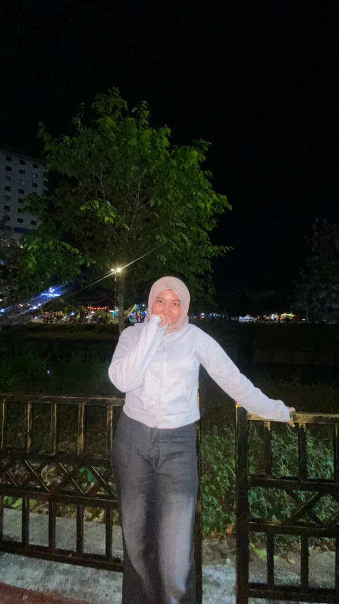
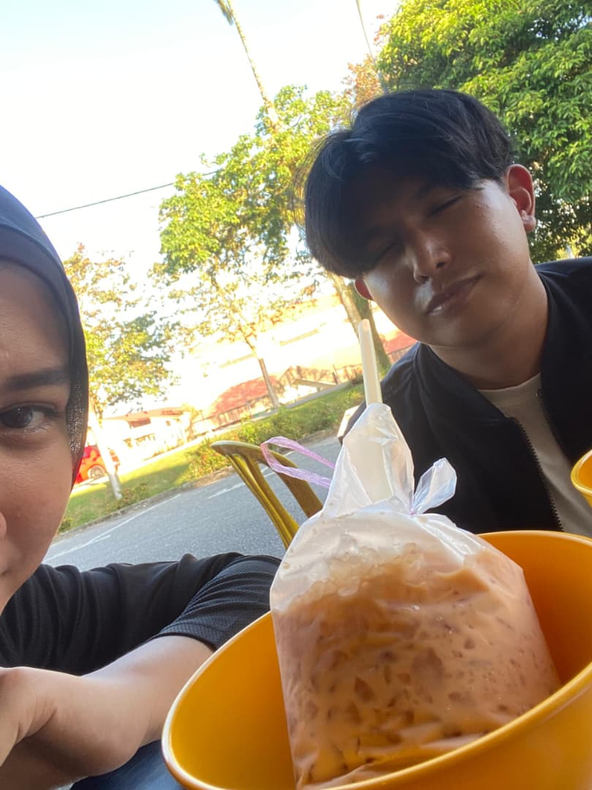
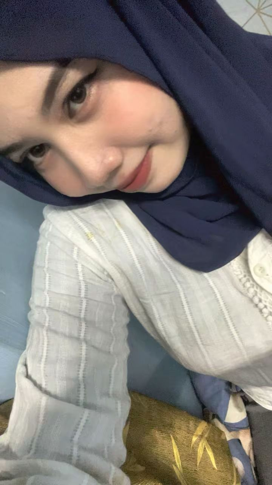

Selamat Hari Jadi, my Husna! Akhirnya baby dah tua, masuk umur 20! Awak bukan budak-budak lagi dah, tapi awak tetap menjadi budak saya yang manjah. I've prepared this surprise for you, nak ada kelainan hehe. Best tak baby, dapat surprise lain daripada yang lain? I do this sincerely tau, bukan nak berlagak ke apa, cuma... come on, it's your 20th birthday! I wanted to make it special for you, sebab baby pun special untuk saya. Pakwe budak coding tapi tak gunakan ilmu coding dia untuk buat surprise berasaskan coding AHHAHAHA. Dah lama saya plan nak buat surprise macam ni untuk awak, tapi tak berani buat sebab takut indah khabar dari rupa. But at last, I did it for you!
Jangan lupa play lagu kat button atas tu tau, memang khas untuk baby. Lagu ni antara lagu romantik favorite saya, sebab asal bukak lagu ni je, teringat baby, teringat betapa ikhlasnya saya sayang awak baby. Baca la ya wish ni sambil buka birthday present tu, syok sikit kan vibe-vibe gitu hehe (maap last minute tak dapat belikan hadiah tapi baby boleh mintak saya duit meow). Alhamdulillah, rasa sayang tu tak pernah kurang walaupun dah masuk tahun ke-3 kita bersama, walaupun banyak gaduh kan sayang. Kita dua orang yang kuat, whatever happens, we stay strong. Gaduh sampai 3 hari pun, in the end, masing-masing cari balik each other. Rasa rindu tu kuat, tak sama hidup tu kalau ayang tak ada manja-manja dengan saya. I hope, dengan bertambahnya umur baby, sayang will be more matured (but manja sekali la hehe), semakin cantik, makin garang, makin sayang, makin rajin kemas bilik, makin murah rezeki, makin, dan segala "semakin" yang positif untuk baby. Saya doakan yang terbaik untuk baby, untuk kita, untuk masa depan kita. Hoping you can stay stronger untuk menghadapi beratnya ujian hidup ni, ujian dalam hubungan kekeluargaan, persahabatan, hubungan kita, dan segala jenis ujian yang datang.
But remember my nasihat baby, Allah SWT tak suka dengan hamba-Nya yang sombong, yang tak mencari Dia di saat kita dalam kesusahan. Semua manusia tak sempurna, semua manusia buat dosa, but kalau kita minta bantuan Allah dengan penuh ikhlas, insyaAllah, Allah akan bantu kita. Banyak buat dosa pun bukan penghalang untuk kita bertaubat okay? Setiap ujian yang datang tu adalah peringatan daripada Allah SWT untuk kembali kepada Dia. Anjay berceramah pulak saya AHAHAHHA but still keep it in your mind okay!
Anyways, I love you so much, Husna. You are the best thing that ever happened to me. You are my sunshine, my happiness, my everything. Thank you for being you, thank you for being mine. Happy birthday again, sayang!